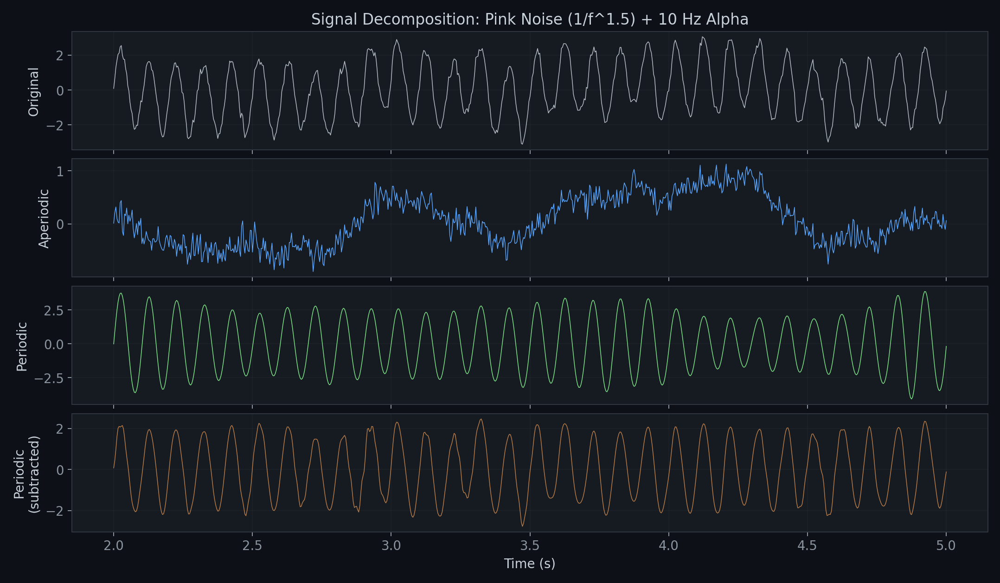
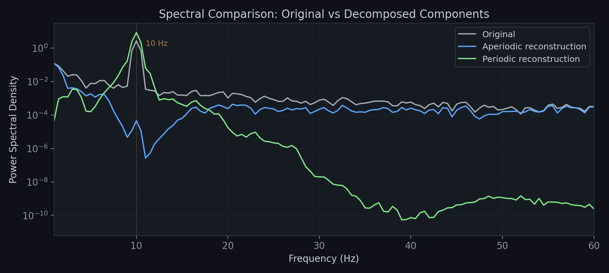
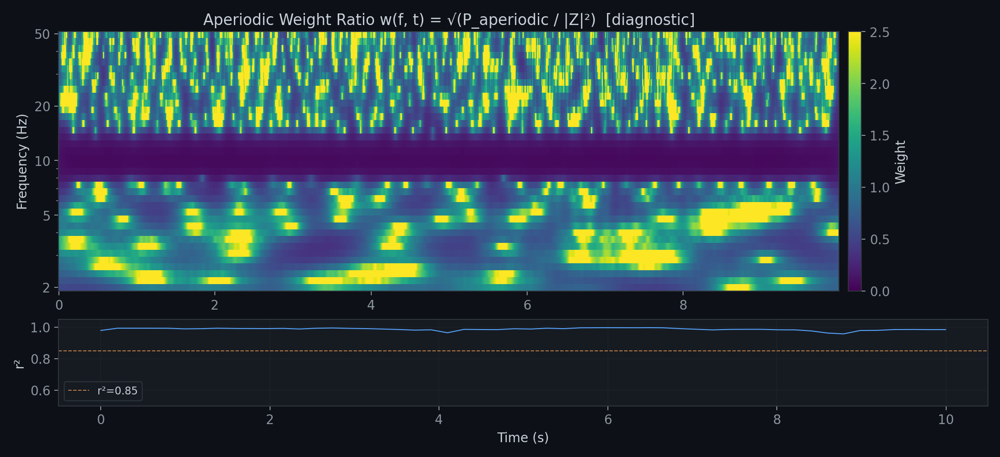
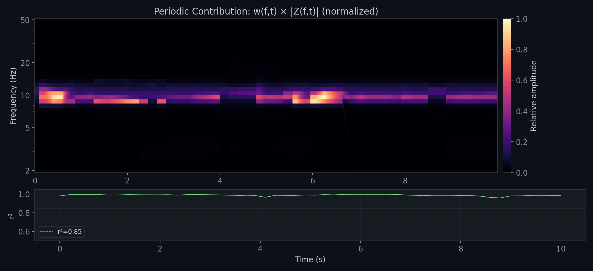
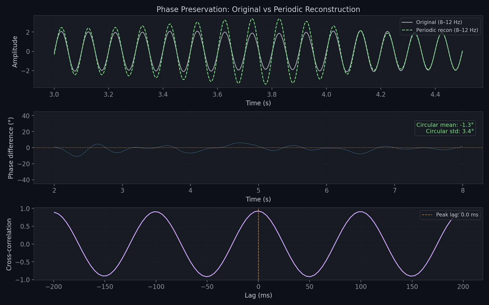
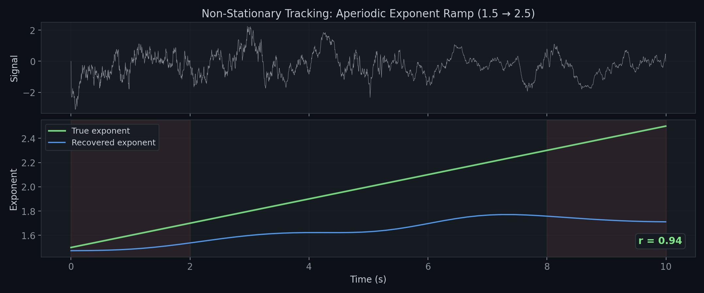
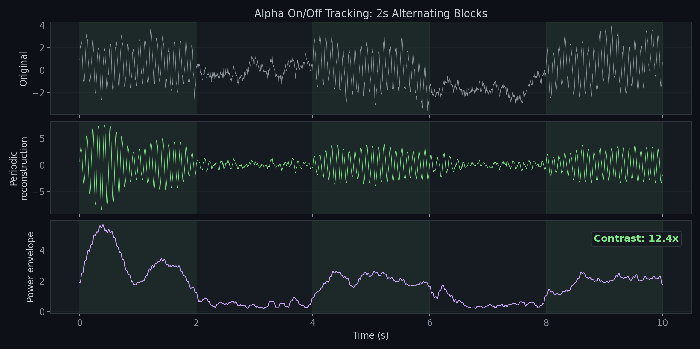
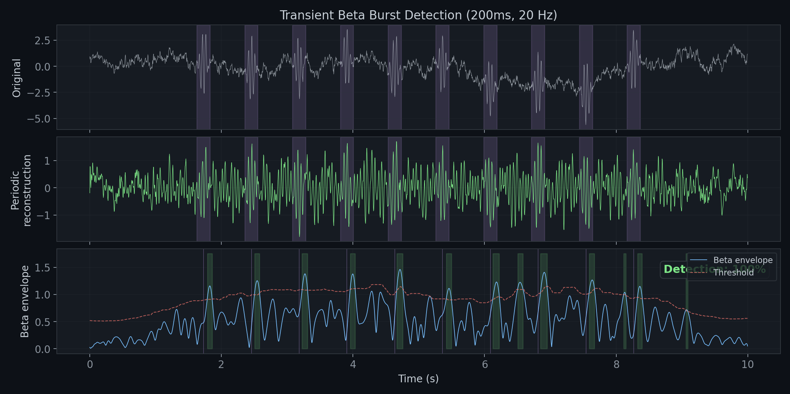
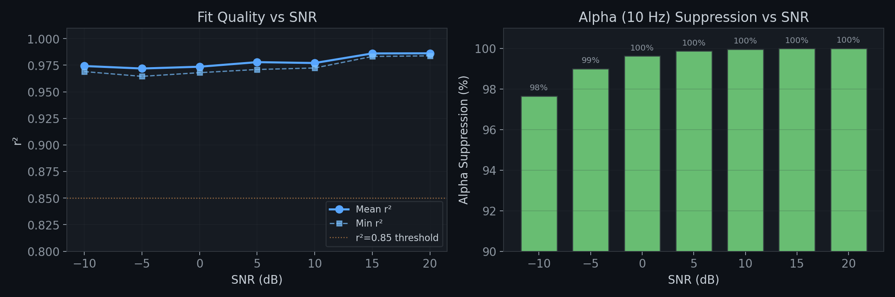

Time-resolved aperiodic/periodic decomposition of M/EEG signals via wavelet-domain parametric modeling and subtraction.
This tool combines meeglet's Morlet wavelets with specparam's parametric spectral modeling to decompose neural signals into aperiodic and periodic time-domain components. Unlike FFT-based approaches that assume stationarity, it tracks spectral dynamics: drifting aperiodic slopes, transient oscillatory bursts, and time-varying peak amplitudes are all resolved in the output.
Three separation strategies are available for the aperiodic component:
original = aperiodic + periodic exactly.
original − periodic, guaranteeing exact additive decomposition.
The bottom two panels show periodic content from two independent computation paths
(direct weight synthesis vs. subtraction residual), confirming consistency.
Signal → complex coefficients Z(f,t) on a log-frequency grid via meeglet Morlet wavelets.
Fit specparam to instantaneous power |Z(f,t)|² at strided time points. Interpolate between fits.
Compute the aperiodic weight ratio w(f,t) = √(Paperiodic / |Z|²), then derive bounded excess weights wexcess = √(1 − w²) to extract periodic content above the 1/f floor.
Synthesize periodic excess via OLA, then subtract from original: aperiodic = original − periodic. Guarantees exact additive decomposition. Reports frame_condition (B/A ≈ 1.0).

aperiodic + periodic =
original exactly in the time domain.
For the aperiodic component, the pipeline computes a 2D aperiodic weight ratio w(f, t) = √(Paperiodic / |Z|²), derives bounded excess weights to extract the periodic excess, and subtracts it from the original signal. For the periodic component, weights are applied directly to wavelet coefficients. Both paths produce time-domain signals via OLA synthesis.

compute_weight_surface().
Where the 1/f model accounts for most of the observed power, w ≈ 1 (bright);
where a periodic peak dominates total power, w is small (dark). The dark band near
10 Hz reflects the alpha oscillation making total power much larger than the aperiodic
component alone. The pipeline uses this ratio to derive bounded excess weights
wexcess = √(1 − w²) for periodic extraction, then subtracts
the periodic synthesis from the original signal.
Bottom: Specparam fit quality (r²) over time, consistently above 0.95.
aperiodic = original − periodic.
This guarantees an exact additive decomposition. The aperiodic retains
broadband 1/f structure, though some attenuation at peak frequencies is
expected due to the approximate OLA synthesis (validated to within 50x of the 1/f
model prediction).

For the periodic component, real-valued, non-negative excess weights
are applied to complex wavelet coefficients: Z(f,t) × wexcess(f,t).
Because the weights are real and ≥ 0, the operation preserves phase exactly
in the wavelet domain. For the aperiodic component, the subtraction
approach (original − periodic) inherits the phase fidelity of the
periodic synthesis — any phase error in the periodic output appears inverted
in the aperiodic.
In the time domain, phase fidelity depends on the synthesis quality. The OLA
reconstruction with iterative refinement (n_iter=5) preserves phase
structure with high accuracy, as verified below: the periodic reconstruction’s
alpha oscillation aligns in phase with the original signal’s alpha content.

Separating a mixed signal into aperiodic and periodic components at peak frequencies
is fundamentally underdetermined from a single observation. Each strategy makes a
different trade-off. Use the separation parameter to choose:
separation="subtraction" —
Extracts the periodic excess via bounded weights wexcess = √(1 − wap²),
synthesizes it, and subtracts from the original. Guarantees original = aperiodic + periodic
at machine precision. Best for time-domain waveform analyses where the
temporal shape of the aperiodic must be preserved (waveform correlation ~0.95).
The trade-off: aperiodic power at peak frequencies is suppressed.
separation="wiener" —
Scales wavelet coefficients by √(Pap/|Z|²). Preserves the correct
aperiodic power at all frequencies (spectral shape error 0.38–0.75).
Best for spectral-domain analyses where the PSD shape matters.
The trade-off: the waveform is contaminated by periodic phase structure
(waveform correlation ~0.34), so the aperiodic time series is unreliable for
event-related or connectivity analyses.
separation="state_space" —
Models the signal as a superposition of K damped oscillators (from specparam peaks)
and an AR(p) process (from specparam aperiodic exponent). Uses the Rauch-Tung-Striebel
smoother for optimal bidirectional estimation. The oscillator components are available
directly for burst detection and oscillator timing analysis.
The trade-off: the narrowband oscillator absorbs all power near peak frequencies
(including the aperiodic contribution), so the aperiodic component also has
suppressed power at those frequencies.
from meeglet_specparam_weights import (
wavelet_decompose, time_resolved_fit,
state_space_decompose,
)
decomp = wavelet_decompose(signal, sfreq, foi_start=2, foi_end=50)
fit = time_resolved_fit(decomp, fit_stride=50, power_window=400)
# Full decomposition with access to individual oscillators
ss = state_space_decompose(signal, sfreq, fit)
print(f"Oscillators: {ss.model.n_oscillators}")
print(f"Center freqs: {ss.model.center_freqs} Hz")
print(f"AR order: {ss.model.ar_order}")
print(f"Log-likelihood: {ss.log_likelihood:.1f}")
# Individual components (all sum to original signal)
alpha_oscillator = ss.oscillators[0] # (n_samples,)
aperiodic = ss.aperiodic # (n_samples,)
noise = ss.measurement_noise # (n_samples,)All validation uses synthetic signals with analytically known ground truth. No real EEG data is used in this repo — real-data validation belongs in downstream studies. Each test below targets a specific capability of the method.
Head-to-head comparison of all three separation strategies against signals with independently known aperiodic and periodic components. The validation sweeps the periodic power fraction from 0.1 to 0.9 and measures three metrics against ground truth.
| Metric (best →) | Subtraction | Wiener | State-Space |
|---|---|---|---|
| Waveform correlation (→ 1.0) | 0.95 | 0.34 | 0.61 |
| Spectral shape error (→ 0.0) | 1.07 | 0.53 | 2.62 |
| Alpha power ratio (→ 1.0) | 0.01 | 1.72 | 0.001 |
The key advantage over FFT-based methods: tracking time-varying spectral structure. Here, a synthetic signal has an aperiodic exponent that ramps linearly from 1.5 to 2.5 over 10 seconds. The method recovers this trajectory with high fidelity.

Alpha oscillations that switch on and off in 2-second blocks — a proxy for event-related alpha suppression/enhancement. The periodic reconstruction should show high power during "on" blocks and low power during "off" blocks.

Short-lived oscillatory events (beta bursts) are a key feature of sensorimotor cortex. This test embeds 10 Hanning-windowed beta bursts (200 ms, 20 Hz) in pink noise and checks whether the periodic reconstruction preserves them with enough temporal precision for envelope-based detection.

How well does the method hold up as periodic signal power drops below the noise floor? We sweep the alpha SNR from −10 dB (oscillation 10x weaker than noise) to +20 dB and measure fit quality and periodic extraction quality.

# Install dependencies
pip install numpy scipy meeglet specparam matplotlib
# Clone and install
git clone https://github.com/chchatham/meeglet-specparam-weights.git
cd meeglet-specparam-weightsimport numpy as np
from meeglet_specparam_weights import meeglet_specparam_reconstruct
# Generate a test signal: pink noise + 10 Hz oscillation
sfreq = 256.0
t = np.arange(int(10 * sfreq)) / sfreq
rng = np.random.default_rng(42)
# Create pink noise
white = rng.standard_normal(len(t))
fft = np.fft.rfft(white)
freqs = np.fft.rfftfreq(len(t), d=1.0 / sfreq)
freqs[0] = 1.0
fft *= 1.0 / np.power(freqs, 0.75)
signal = np.fft.irfft(fft, n=len(t))
signal += 2.0 * np.sin(2 * np.pi * 10 * t) # add alpha
# Extract the aperiodic component
result = meeglet_specparam_reconstruct(
signal, sfreq,
component="aperiodic",
foi_start=2.0, foi_end=50.0,
bw_oct=0.5,
fit_stride=50,
power_window=400,
freq_range=[1, 50],
n_iter=5,
)
aperiodic = result.reconstruction # aperiodic time-domain signal
periodic = result.residual # periodic excess (aperiodic + periodic = original)
print(f"Method: {result.method}") # "subtraction"
print(f"Mean r²: {result.fit.r_squared.mean():.3f}")
print(f"Frame condition: {result.frame_condition:.3f}") # B/A ≈ 1.0 = tight frame
# Try alternative separation strategies
result_wiener = meeglet_specparam_reconstruct(
signal, sfreq,
component="aperiodic", separation="wiener",
foi_start=2.0, foi_end=50.0, bw_oct=0.5,
fit_stride=50, freq_range=[1, 50], n_iter=5,
)
result_ss = meeglet_specparam_reconstruct(
signal, sfreq,
component="aperiodic", separation="state_space",
foi_start=2.0, foi_end=50.0, bw_oct=0.5,
fit_stride=50, freq_range=[1, 50], n_iter=5,
)# Same signal, extract oscillatory content instead
result_periodic = meeglet_specparam_reconstruct(
signal, sfreq,
component="periodic",
foi_start=2.0, foi_end=50.0,
bw_oct=0.5,
fit_stride=50,
power_window=400,
freq_range=[1, 50],
n_iter=5,
)
periodic = result_periodic.reconstruction # oscillatory signalfrom meeglet_specparam_weights import (
plot_fit_quality,
plot_weight_surface,
plot_decomposition,
plot_parameter_trajectories,
plot_aperiodic_coupling,
plot_decomposition_bias,
)
plot_fit_quality(result) # r² over time
plot_weight_surface(result) # 2D weight heatmap (freq × time)
plot_decomposition(result) # original / reconstruction / residual
plot_parameter_trajectories(result) # exponent, offset, peak CFs
plot_decomposition_bias(result) # power bias factor across frequencies
# plot_aperiodic_coupling(coupling) # coupling heatmap (see Coupling section)| Parameter | Default | Description |
|---|---|---|
component | "aperiodic" | Which component to reconstruct: "aperiodic", "periodic", or "full" |
foi_start / foi_end | 2.0 / 32.0 | Frequency range for wavelet analysis (Hz) |
bw_oct | 0.5 | Wavelet bandwidth in octaves |
fit_stride | 10 | Fit specparam every N samples (higher = faster) |
power_window | None | Samples to average power over before fitting |
n_iter | 1 | Iterative synthesis refinement (use 5 for best quality) |
smooth_sigma | None | Gaussian smoothing of parameter trajectories |
separation | "subtraction" | Separation strategy for component="aperiodic": "subtraction", "wiener", or "state_space" |
eps | 1e-20 | Floor for weight denominator |
max_weight | 100.0 | Maximum allowed weight |
All pipeline functions accept 2D input (n_channels, n_samples) in addition
to 1D. Each channel is processed independently — same wavelet grid, same fit
parameters, but separate specparam fits and weight surfaces per channel. Single-channel
input continues to produce the same output shapes as before.
import numpy as np
from meeglet_specparam_weights import meeglet_specparam_reconstruct
# Multi-channel signal: (n_channels, n_samples)
signal = np.stack([channel_1, channel_2, channel_3]) # (3, n_samples)
result = meeglet_specparam_reconstruct(
signal, sfreq,
component="aperiodic",
foi_start=2, foi_end=50,
bw_oct=0.5,
fit_stride=50,
power_window=400,
freq_range=[1, 50],
n_iter=5,
)
# Multi-channel output shapes:
# result.reconstruction: (n_channels, n_samples)
# result.residual: (n_channels, n_samples)
# result.fit.aperiodic_params: (n_channels, n_times, 2)
# result.fit.r_squared: (n_channels, n_times)
# result.fit.model_power: (n_channels, n_freqs, n_times)
# result.weights.weights: (n_channels, n_freqs, n_times)
# result.decomposition.coefficients: (n_channels, n_freqs, n_times)| Field | Single-channel | Multi-channel |
|---|---|---|
result.reconstruction | (n_samples,) | (n_channels, n_samples) |
result.fit.aperiodic_params | (n_times, 2) | (n_channels, n_times, 2) |
result.fit.r_squared | (n_times,) | (n_channels, n_times) |
result.weights.weights | (n_freqs, n_times) | (n_channels, n_freqs, n_times) |
result.decomposition.coefficients | (n_freqs, n_times) | (n_channels, n_freqs, n_times) |
The coupling module tests whether slow fluctuations in aperiodic parameters (exponent, offset) are correlated with oscillatory amplitude at specific frequencies. This is a common question in systems neuroscience — do changes in the “background” 1/f slope predict changes in alpha or beta power?
Aperiodic parameter trajectories (exponent and offset over time) are wavelet-decomposed into
“virtual channels” on the same frequency grid as the real data. These virtual channels
are band-limited to the effective Nyquist (sfreq / (2 × fit_stride)), z-scored
for unit normalization, and augmented into the cross-spectral density matrix alongside the real
wavelet coefficients. The result is an augmented CSD of shape
(n_ch + 2, n_ch + 2, n_freqs).
from meeglet_specparam_weights import (
wavelet_decompose, time_resolved_fit,
aperiodic_virtual_channels,
compute_aperiodic_csd, aperiodic_amplitude_correlation,
effective_dof, wavelet_effective_dof,
plot_aperiodic_coupling,
)
# Multi-channel signal: (n_channels, n_samples)
decomp = wavelet_decompose(signal, sfreq, foi_start=2, foi_end=50)
fit = time_resolved_fit(decomp, fit_stride=25, power_window=200)
# Simple amplitude correlation: corr(exponent(t), |Z(ch, f, t)|)
amp_corr = aperiodic_amplitude_correlation(decomp, fit)
# amp_corr shape: (n_channels, n_freqs)
# Full augmented CSD with virtual channels
coupling = compute_aperiodic_csd(decomp, fit)
print(f"CSD shape: {coupling.csd.shape}") # (n_ch+2, n_ch+2, n_freqs)
print(f"Effective Nyquist: {coupling.effective_nyquist:.1f} Hz")
print(f"Labels: {coupling.channel_labels}") # ['ch0', ..., 'exponent', 'offset']
# Correct DOF for autocorrelated signals (Bartlett)
exponent = fit.aperiodic_params[:, 1]
amplitude_10hz = np.abs(decomp.coefficients[idx_10, :])
n_eff = effective_dof(exponent, amplitude_10hz)
# Frequency-dependent DOF from wavelet temporal resolution
n_eff_wavelet = wavelet_effective_dof(decomp.sigma_time, decomp.sfreq, signal.shape[-1])
# n_eff_wavelet shape: (n_freqs,) — lower freqs have fewer independent samples
# Virtual channels: wavelet-decomposed exponent/offset trajectories
virtual_coeffs, eff_nyq = aperiodic_virtual_channels(fit, decomp)
# virtual_coeffs shape: (2, n_freqs, n_times) — z-scored, band-limited
# Visualize
plot_aperiodic_coupling(coupling)| Function | Returns | Description |
|---|---|---|
compute_aperiodic_csd(decomp, fit) |
AperiodicCouplingResult |
Augmented CSD with virtual channels for exponent and offset |
aperiodic_amplitude_correlation(decomp, fit) |
(n_ch, n_freqs) |
Pearson correlation between exponent trajectory and wavelet amplitude |
aperiodic_virtual_channels(fit, decomp) |
(coeffs, nyquist) |
Z-scored, band-limited virtual channel coefficients |
effective_dof(x, y) |
float |
Bartlett-corrected DOF for two autocorrelated series |
wavelet_effective_dof(sigma_time, sfreq, n_samples) |
(n_freqs,) |
Frequency-dependent DOF from wavelet temporal resolution: T / (2 × σt) |
plot_aperiodic_coupling(coupling) |
Figure |
Amplitude correlation heatmap with Nyquist cutoff line |
Circularity. Aperiodic parameters are derived from wavelet power via specparam fitting. Correlating them back to the same wavelet features creates inherent circularity. Surrogate testing (block-permuted aperiodic trajectory) is required for any inference.
Effective Nyquist.
Coupling is only meaningful below the effective Nyquist frequency:
sfreq / (2 × fit_stride). With default parameters (stride=50, sfreq=256),
this is ~2.5 Hz — infraslow modulations only. Content above this frequency in the
virtual channels is interpolation artifact and is zeroed out.
Single-trial wavelet power is noisy (χ²(2) per time-frequency bin). For epoched M/EEG data, averaging power across trials before fitting specparam yields much more stable aperiodic/periodic parameter estimates. The ensemble fit is then applied to each individual epoch for per-trial reconstruction.
Wavelet-decompose every epoch independently → Zk(f,t).
Compute trial-averaged |Z|² across epochs for a stable power estimate.
Fit specparam to the averaged power → stable aperiodic/periodic parameters.
Apply ensemble fit to each epoch’s coefficients via the chosen separation strategy.
from meeglet_specparam_weights import meeglet_specparam_reconstruct_epochs
# epochs: (n_epochs, n_samples) array
result = meeglet_specparam_reconstruct_epochs(
epochs, sfreq,
separation="subtraction",
foi_start=2.0, foi_end=40.0,
bw_oct=0.5,
fit_stride=25,
freq_range=[1, 40],
n_iter=5,
)
# Per-epoch decomposition
aperiodic = result.aperiodic # (n_epochs, n_samples)
periodic = result.periodic # (n_epochs, n_samples)
# aperiodic[k] + periodic[k] == epochs[k] (machine precision)
# Stable ensemble parameters
exponent = result.ensemble_fit.aperiodic_params[:, 1]
r_squared = result.ensemble_fit.r_squared
print(f"Mean r²: {r_squared.mean():.3f}")
With separate_evoked=True, trial-averaged wavelet coefficients (phase-locked
activity / ERPs) are subtracted before fitting. The evoked signal is synthesized and
returned separately; only the induced (non-phase-locked) part is decomposed into
aperiodic and periodic components.
result = meeglet_specparam_reconstruct_epochs(
epochs, sfreq,
separate_evoked=True,
separation="subtraction",
n_iter=5,
)
evoked = result.evoked # (n_samples,) — phase-locked signal
aperiodic = result.aperiodic # (n_epochs, n_samples) — induced aperiodic
periodic = result.periodic # (n_epochs, n_samples) — induced periodic
# Decomposition of the induced part is exact:
# aperiodic[k] + periodic[k] == epochs[k] - evoked
For custom workflows, ensemble_decompose() returns the per-epoch wavelet
decompositions and trial-averaged power without fitting or reconstruction.
from meeglet_specparam_weights import ensemble_decompose
decompositions, ensemble_power = ensemble_decompose(
epochs, sfreq, foi_start=2, foi_end=40,
)
# decompositions: list[WaveletDecomposition], one per epoch
# ensemble_power: (n_freqs, n_times) — trial-averaged |Z|²| Field | Shape | Description |
|---|---|---|
aperiodic | (n_epochs, n_samples) | Per-epoch aperiodic signal |
periodic | (n_epochs, n_samples) | Per-epoch periodic signal |
evoked | (n_samples,) or None | Trial-averaged signal (if separate_evoked=True) |
ensemble_fit | TimeResolvedFit | Fit from trial-averaged power |
ensemble_power | (n_freqs, n_times) | Trial-averaged wavelet power |
separation | str | Strategy used: "subtraction", "wiener", or "state_space" |
energy_ratios | (n_epochs,) | Per-epoch energy ratio |
The standard pipeline processes each channel independently. When channels share oscillatory sources (as in M/EEG sensor data), this ignores spatial structure and produces redundant, noisier fits. Spectral PCA is an alternative pathway that eigendecomposes the cross-spectral density (CSD) matrix at each frequency, yielding orthogonal spatial modes whose eigenvalue spectra are real, non-negative power spectra — ideal input for specparam. Fitting and separating in this decorrelated basis is optimal (MMSE) and naturally deduplicates shared oscillations into a single mode rather than N redundant per-channel fits.
Given multi-channel wavelet coefficients Z (n_channels, n_freqs, n_times):
S(f) = (1/T) Σt Z(:,f,t) · Z(:,f,t)H — Hermitian PSD matrix per frequency.
S(f) = U(f) Λ(f) U(f)H — eigenvalues λk(f) are mode power spectra.
Zpc = UH · Z — fit specparam per mode in the decorrelated PC space.
Weight in PC space, project back to channels via U, synthesize via OLA, subtract: aperiodic = original − periodic.
The CSD matrix S(f) captures both per-channel power (diagonal) and cross-channel coherence (off-diagonal). Eigendecomposition finds orthogonal spatial patterns that explain the most variance at each frequency. This has three key benefits:
The eigenvalues λk(f) are real and non-negative (guaranteed by the Hermitian PSD structure of the CSD), making them directly suitable as power spectra for specparam fitting — no absolute-value or log corrections needed.
import numpy as np
from meeglet_specparam_weights import spectral_pca_reconstruct
# Multi-channel signal: (n_channels, n_samples)
signal = np.stack([ch1, ch2, ch3, ch4]) # (4, n_samples)
result = spectral_pca_reconstruct(
signal, sfreq,
n_modes=None, # None = all modes (no rank reduction)
separation="subtraction", # or "wiener"
foi_start=2.0, foi_end=40.0,
bw_oct=0.5,
fit_stride=20,
freq_range=[1, 40],
n_iter=5,
)
# Channel-space decomposition: exact additive
aperiodic = result.aperiodic # (n_channels, n_samples)
periodic = result.periodic # (n_channels, n_samples)
# aperiodic + periodic == signal (machine precision)
# Mode-space results
print(f"Modes retained: {result.n_modes}")
print(f"Variance explained: {result.variance_explained}")
print(f"Mean r²: {result.mode_fit.r_squared.mean():.3f}")
print(f"Frame condition: {result.frame_condition:.3f}")
Setting n_modes less than n_channels discards low-variance
modes before fitting. This is particularly useful when you have many sensors
(e.g., 64-channel EEG) but only a few meaningful sources. The discarded modes
contain mostly noise, so the surviving modes yield cleaner specparam fits.
# 64-channel EEG: retain top 10 modes
result = spectral_pca_reconstruct(
eeg_data, sfreq,
n_modes=10,
separation="subtraction",
foi_start=2.0, foi_end=40.0,
fit_stride=20,
n_iter=5,
)
# Check how much variance the retained modes capture
cumvar = np.cumsum(result.variance_explained)
print(f"Top 10 modes explain {cumvar[-1]*100:.1f}% of total variance")For custom analyses, the CSD and eigendecomposition steps are exposed as standalone functions. This lets you inspect the spatial modes, compute coherence, or use the eigenvalue spectra for your own parametric modeling.
from meeglet_specparam_weights import (
wavelet_decompose,
compute_csd, spectral_pca_decompose,
)
decomp = wavelet_decompose(signal, sfreq, foi_start=2, foi_end=40)
# Cross-spectral density: (n_ch, n_ch, n_freqs)
csd = compute_csd(decomp)
# Eigendecompose into spatial modes
eigenvectors, eigenvalues, csd = spectral_pca_decompose(decomp, n_modes=3)
# eigenvectors: (n_ch, n_modes, n_freqs) — spatial patterns per mode
# eigenvalues: (n_modes, n_freqs) — power spectrum per mode
# Eigenvalue spectra are real, non-negative power spectra
print(f"Mode 0 power at each freq: {eigenvalues[0]}")
print(f"All non-negative: {np.all(eigenvalues >= 0)}")
# Variance explained per mode
total_power = eigenvalues.sum()
var_explained = eigenvalues.sum(axis=1) / total_power
print(f"Variance explained: {var_explained}")The result includes per-mode periodic and aperiodic time-domain signals, synthesized via OLA from the weighted PC-space coefficients. These are approximate (there is no "original signal" in mode space to subtract from), but useful for inspecting what each spatial mode contributes.
# Per-mode signals
for k in range(result.n_modes):
mode_per_rms = np.sqrt(np.mean(result.mode_periodic[k] ** 2))
mode_ap_rms = np.sqrt(np.mean(result.mode_aperiodic[k] ** 2))
print(f"Mode {k}: periodic RMS={mode_per_rms:.4f}, "
f"aperiodic RMS={mode_ap_rms:.4f}, "
f"var explained={result.variance_explained[k]:.3f}")
# Eigenvectors at a specific frequency give the spatial pattern
alpha_idx = np.argmin(np.abs(result.decomposition.foi - 10.0))
spatial_pattern = result.eigenvectors[:, 0, alpha_idx] # mode 0 at 10 Hz
print(f"Mode 0 spatial pattern at 10 Hz: {np.abs(spatial_pattern)}")| Aspect | Per-Channel | Spectral PCA |
|---|---|---|
| Fitting | Independent specparam fit per channel | Specparam fit per spatial mode (decorrelated) |
| Shared oscillations | Fitted N times (once per channel) | Fitted once (captured by dominant mode) |
| Noise modes | All channels fitted, including noisy ones | Discardable via n_modes rank reduction |
| Spatial information | None — each channel independent | Eigenvectors give spatial patterns per mode/frequency |
| When to use | Few channels, no shared sources, or channel-specific analysis needed | Many channels with shared oscillatory sources (e.g., sensor-level M/EEG) |
| Field | Shape | Description |
|---|---|---|
aperiodic | (n_ch, n_samples) | Per-channel aperiodic signal |
periodic | (n_ch, n_samples) | Per-channel periodic signal |
eigenvectors | (n_ch, n_modes, n_freqs) | Complex spatial modes per frequency |
eigenvalues | (n_modes, n_freqs) | Real, non-negative eigenvalue spectra |
mode_fit | TimeResolvedFit | Specparam fit in PC space (modes as channels) |
mode_periodic | (n_modes, n_samples) | Per-mode periodic signal (approximate) |
mode_aperiodic | (n_modes, n_samples) | Per-mode aperiodic signal (approximate) |
n_modes | int | Number of modes retained |
variance_explained | (n_modes,) | Fraction of total power per mode |
csd | (n_ch, n_ch, n_freqs) | Cross-spectral density matrix |
energy_ratio | float | ||aperiodic||² / ||signal||² |
frame_condition | float | OLA frame condition B/A (≈ 1.0 = tight) |
separation | str | "subtraction" or "wiener" |
Time-averaged CSD. The CSD is averaged over the entire signal duration, producing fixed spatial filters. Power is still time-varying (specparam runs on instantaneous PC-space power), but the spatial modes themselves are stationary. This is the standard approach in the literature (Hipp et al. 2012) and is appropriate when the sensor-to-source mapping doesn't change within a recording. Time-resolved CSD is a future extension.
Mode signals are approximate. There is no "original signal" in mode space — only the channel-space signal is real. Per-mode periodic and aperiodic signals are synthesized from weighted PC-space coefficients via OLA, which is inherently approximate. The channel-space outputs (aperiodic + periodic = original) are exact.
State-space separation not supported.
The multi-channel Kalman extension is not yet implemented. Use "subtraction"
or "wiener" for spectral PCA decomposition.
These workflows illustrate research scenarios where time-resolved decomposition provides capabilities beyond what static FFT-based methods can offer. Each draws inspiration from common specparam-fft-weights use cases but exploits the wavelet method's ability to track spectral dynamics continuously.
Alpha oscillations often exhibit non-sinusoidal waveform shapes (peak–trough asymmetry) that may carry information about underlying dynamics. Extracting these shapes requires removing the aperiodic background — but if the 1/f slope changes over the course of a recording, a static correction biases the waveform. The wavelet method adapts the aperiodic model at every time step, so the periodic extraction stays clean even as the background shifts.
import numpy as np
from scipy.signal import butter, sosfiltfilt, hilbert
from meeglet_specparam_weights import meeglet_specparam_reconstruct
# Suppose `signal` has a drifting aperiodic slope over time
# and intermittent alpha with non-sinusoidal shape
result = meeglet_specparam_reconstruct(
signal, sfreq,
component="periodic",
foi_start=2.0, foi_end=50.0,
bw_oct=0.5,
fit_stride=50,
power_window=400,
freq_range=[1, 50],
n_iter=5,
)
# Bandpass the periodic component for alpha-specific waveform analysis
sos = butter(4, [7, 14], btype="band", fs=sfreq, output="sos")
alpha_waveform = sosfiltfilt(sos, result.reconstruction)
# Measure peak-trough asymmetry across the recording
analytic = hilbert(alpha_waveform)
phase = np.angle(analytic)
# Find peaks (phase=0) and troughs (phase=±π)
peak_idx = np.where(np.diff(np.sign(phase)) < 0)[0]
trough_idx = np.where(np.diff(np.sign(phase - np.pi)) < 0)[0]
peak_amplitudes = alpha_waveform[peak_idx]
trough_amplitudes = np.abs(alpha_waveform[trough_idx])
# Asymmetry > 1 means sharper peaks than troughs (arch-shaped alpha)
asymmetry = np.mean(peak_amplitudes) / np.mean(trough_amplitudes)
print(f"Peak-trough asymmetry: {asymmetry:.2f}")
# Because the 1/f correction adapts over time, this asymmetry measure
# is not biased by slow drifts in the aperiodic backgroundTraditional 1/f-corrected ERP analysis fits one specparam model per epoch and subtracts a static aperiodic signal. But spectral structure often changes within a trial — alpha desynchronizes after stimulus onset, aperiodic slopes change within a trial. The ensemble epoch pipeline averages power across trials for a stable fit, separates the evoked (phase-locked) response, and gives you per-trial induced periodic envelopes rather than a single number per epoch.
import numpy as np
from meeglet_specparam_weights import meeglet_specparam_reconstruct_epochs
from scipy.signal import hilbert, butter, sosfiltfilt
# epochs: (n_epochs, n_samples) — e.g., -0.5 to 1.5s around stimulus onset
sfreq = 256.0
t_epoch = np.arange(epochs.shape[1]) / sfreq - 0.5
# Ensemble fit + evoked separation + per-epoch reconstruction
result = meeglet_specparam_reconstruct_epochs(
epochs, sfreq,
separate_evoked=True, # separate ERP from induced
separation="subtraction",
foi_start=2.0, foi_end=40.0,
bw_oct=0.5,
fit_stride=25,
freq_range=[1, 40],
n_iter=5,
)
# Per-trial induced periodic envelopes
sos = butter(4, [8, 13], btype="band", fs=sfreq, output="sos")
alpha_envelopes = []
for k in range(epochs.shape[0]):
alpha_bp = sosfiltfilt(sos, result.periodic[k])
alpha_envelopes.append(np.abs(hilbert(alpha_bp)))
mean_alpha_env = np.mean(alpha_envelopes, axis=0)
# Quantify alpha desynchronization: post-stim vs. baseline
baseline = mean_alpha_env[t_epoch < 0].mean()
post_stim = mean_alpha_env[(t_epoch > 0.2) & (t_epoch < 0.8)].mean()
erd_pct = 100 * (baseline - post_stim) / baseline
print(f"Alpha ERD: {erd_pct:.1f}%")
# The evoked response is separated cleanly
print(f"Evoked RMS: {np.sqrt(np.mean(result.evoked ** 2)):.4f}")The aperiodic exponent varies across time and experimental conditions. With FFT-based methods, you compare discrete epochs (rest vs. task, pre vs. post). The wavelet method gives you a continuous exponent trajectory, enabling detection of transitions, gradual drifts, and moment-to-moment fluctuations within a single recording.
import numpy as np
from meeglet_specparam_weights import meeglet_specparam_reconstruct
from scipy.ndimage import uniform_filter1d
# Long recording: e.g., 5-minute resting state at 256 Hz
sfreq = 256.0
# Decompose with smoothing to get stable exponent estimates
result = meeglet_specparam_reconstruct(
signal, sfreq,
component="aperiodic",
foi_start=2.0, foi_end=50.0,
bw_oct=0.5,
fit_stride=100, # fit every ~0.4s for long recordings
power_window=800, # ~3s averaging window for stable fits
smooth_sigma=5.0, # smooth the parameter trajectory
freq_range=[1, 50],
n_iter=5,
)
# Extract the continuous exponent trajectory
times = result.fit.times
exponent = result.fit.aperiodic_params[:, 1]
r_squared = result.fit.r_squared
# Smooth for state-level analysis (10s moving average)
exponent_smooth = uniform_filter1d(exponent, size=int(10 * sfreq / 100))
# Detect state transitions via derivative threshold
d_exp = np.gradient(exponent_smooth, times)
transition_mask = np.abs(d_exp) > np.std(d_exp) * 2
transition_times = times[transition_mask]
print(f"State transitions detected at: {transition_times} s")
# Compare aperiodic RMS across detected segments
# (segments between transitions represent quasi-stable spectral states)
aperiodic = result.reconstruction
segment_boundaries = np.concatenate([[0],
np.where(transition_mask)[0],
[len(aperiodic)]
])
for i in range(len(segment_boundaries) - 1):
seg = aperiodic[segment_boundaries[i]:segment_boundaries[i + 1]]
rms = np.sqrt(np.mean(seg ** 2))
print(f"Segment {i}: RMS={rms:.4f}, mean exponent={exponent[segment_boundaries[i]]:.2f}")Transient oscillatory bursts (beta events in sensorimotor cortex, sleep spindles, gamma bursts) are invisible to methods that assume stationarity — a 200 ms burst is smeared into the global spectrum. The wavelet method's periodic reconstruction preserves the temporal structure of these events, enabling envelope-based detection with precise timing and duration estimates.
import numpy as np
from scipy.signal import butter, sosfiltfilt, hilbert
from meeglet_specparam_weights import meeglet_specparam_reconstruct
# Extract the periodic component
result = meeglet_specparam_reconstruct(
signal, sfreq,
component="periodic",
foi_start=2.0, foi_end=50.0,
bw_oct=0.5,
fit_stride=25, # fine stride for transient detection
power_window=100, # short window to preserve burst timing
freq_range=[1, 50],
n_iter=5,
)
# Bandpass for beta (13-30 Hz) and compute the Hilbert envelope
sos = butter(4, [13, 30], btype="band", fs=sfreq, output="sos")
beta_periodic = sosfiltfilt(sos, result.reconstruction)
beta_envelope = np.abs(hilbert(beta_periodic))
# Detect bursts: threshold at median + 2×MAD
median_env = np.median(beta_envelope)
mad = np.median(np.abs(beta_envelope - median_env)) * 1.4826
threshold = median_env + 2 * mad
burst_mask = beta_envelope > threshold
# Extract individual burst events
diff_mask = np.diff(burst_mask.astype(int))
onsets = np.where(diff_mask == 1)[0]
offsets = np.where(diff_mask == -1)[0]
# Align onsets/offsets
if len(offsets) > 0 and (len(onsets) == 0 or offsets[0] < onsets[0]):
offsets = offsets[1:]
if len(onsets) > len(offsets):
onsets = onsets[:len(offsets)]
# Characterize each burst
for i, (on, off) in enumerate(zip(onsets, offsets)):
duration_ms = (off - on) / sfreq * 1000
peak_amp = beta_envelope[on:off].max()
peak_time = (on + np.argmax(beta_envelope[on:off])) / sfreq
print(f"Burst {i}: onset={on / sfreq:.3f}s, duration={duration_ms:.0f}ms, "
f"peak amplitude={peak_amp:.3f} at {peak_time:.3f}s")
# Key advantage: because the periodic extraction is time-resolved,
# burst envelopes are not contaminated by the aperiodic background,
# and 200ms events are not smeared into a global average| Principle | Details |
|---|---|
| Wavelet-native | All weighting happens in the wavelet domain (f, t), never via global FFT. The signal is decomposed once via meeglet; synthesis inverts that decomposition. |
| Phase preservation & subtraction | Periodic extraction uses real, non-negative weights (preserving phase). The aperiodic is defined as original − periodic, guaranteeing exact additive decomposition and preserving the full 1/f power at peak frequencies. |
| specparam does the fitting | We call SpectralModel.fit() on wavelet-derived power profiles. No reimplementation of the optimizer. |
| Log-frequency grid | meeglet's octave-spaced frequencies are used natively. Power is interpolated to linear grids only for specparam fitting. |
| Frame multiplier synthesis | Synthesis is a frame multiplier (Balazs 2007) with OLA reconstruction. The frame condition B/A is computed from the normalization envelope and reported in result.frame_condition. Values near 1.0 indicate a tight frame. |
| NaN-aware | Bad segments marked NaN in the input propagate through wavelets, get zero weights, and produce zero reconstruction at affected time points. |
Not an exact reconstruction. Wavelet synthesis via OLA is approximate. Energy ratios are reported; sample-exact recovery is not guaranteed. For stationary signals where exact reconstruction matters, use specparam-fft-weights directly.
Not a replacement for specparam. We call specparam's fitting algorithm. If the fit is poor (low r²), our decomposition is poor. Always check diagnostics.
Not validated on real EEG data (in this repo). Validation uses synthetic signals with known ground truth. Real-data validation belongs in downstream studies.
pytest tests/ -v # 211 testspython -m validation.sim_stationary
python -m validation.sim_nonstationary
python -m validation.sim_transient
python -m validation.sim_noise_sweep
python -m validation.sim_ground_truth # head-to-head method comparisonpython docs/generate_figures.pyIf you use this tool, please cite: